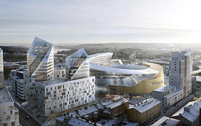

Tampere
Tampereen läpi laskee 18 metrin pudotuksella Tammerkoski. Se on osa vesireittiä, joka ulottuu Näsijärveä pitkin kauas pohjoiseen ja Pyhäjärveä pitkin etelään. Kosken ranta oli suotuisa paikka kaupungille vesivoiman ja järvien kulkuyhteyksien vuoksi. Jo keskiajalla Tammerkosken vapaana pauhaavissa tyrskyissä uiskennelleiden lohien kalastusoikeuksista kiisteltiin. Lisäksi kaikille niille,jotka pystyivät rakentamaan myllyn, annettiin siihen oikeus. Koski erotti toisistaan myös kaksi lääniä, Hämeen ja Satakunnan.
Lähde: Tiina Tuulasvaara-Kaleva
Tampere lukuina
Suomen kolmanneksi suurin kaupunki
- Pinta-ala: 689.59 km2, josta sisävesiä 164.58 km2
- Asukasluku: 228 901 ihmistä (kesäkuu 2017)
- Sukupuolirakenne: asukkaista on naisia hieman yli puolet.
- Koulutus: 15 vuotta täyttäneistä yli kolme neljästä suorittanut perusasteen jälkeisiä tutkintoja
- Veroprosentti 2018: 19,75.
Lähde: Tampereen kaupungin sivut

Historiaa ja historiallisia rakennuksia
Pispala
Pispala on saanut nimensä Pispan talosta, jolla oli muinoin velvollisuus majoittaa piispa tämän matkojen ajaksi. Pispan vuonna 1840 valmistunut päärakennus purettiin vuonna 1989. Vielä vuonna 1869 Pispalassa oli ainoastaan kaksi maatilaa. Pispala kasvoi Kyttälän saneeraamisen jälkeen Pohjois-Pirkkalan puolelle kaupungin rajan taakse. Rajalla oli karjaa varten pystytetty kiviaita ja maantiellä sen kohdalla oli rajaportti. Asemakaavaa ei ollut, joten talot rakennettiin jokseenkin sikin sokin; myös talot suunniteltiin yleensä perinteiseen tapaan ”klubiaskin kanteen” eli ilman tarkempia rakennuspiirustuksia. Pispalassa asui erityisesti tehdastyöläisiä ja rakennustyöläisiä. Suurin osa heistä oli kotoisin Tampereelta ja sen lähikunnista, mutta joitakin tuli myös kauempaa Hämeestä, Satakunnasta ja Pohjanmaalta.
Vuonna 1912 Pispala muodostettiin taajaväkiseksi yhdyskunnaksi. Se liitettiin Tampereeseen 1937 ja sen asemakaava vahvistettiin vuonna 1945
Lähde: Wikipedia

Mökin sai tehdä ihan mielensä mukaisen, pitkittäin, poikittain, vinottain, hirrestä, laudasta, paperista, sahanpurusta, tiilestä, betonista. Maalata vaikka raitaiseksi, jatkaa korottaa, tehdä jiirejä, pykäliä, portaita, siltoja, kaaveleita. Ja eikö muka tehty! Kyllä!
Ei kysytty rakennuspiirustusta, ei työsuunnitelmaa, kustannusarviota, arkkitehtiä, mestaria, teettäjää – ei muuta kuin siitä poikki ja seinään. Niinkuin linnut tietävät miten pesänsä tekevät, niin tiesivät Pispalan miehet miten syntyi luojan palikkaleikki korkealle moreenipenkereelle.
Kaltevaa kamaraansa uhmaten jokainen mökki ja mies pyrki vain julistamaan omaa olemisen riemuaan. Ei ollut se työ työtä vaan jumalanpalvelusta, pakanallista intohimoa Ei ollut enää yö yötä ja päivä päivää, arki arkea ja pyhä pyhää. Oli vaan hyvää ja huonoa rakennussäätä ja sunnuntai oli parasta. Kirveitten, vasaroiden, hirsinuijien iskusarjat kiirivät ympäröiväin vetten päällä. Moni sammaloitunut vierinkivi, herra tiesi mistä ja milloin tullut, sai vapauttavan sysäyksen riemukkaaseen retkeen jylisevää rinnettä alas. Muuten vain.
Lauri Viita
Kauppahalli

Yli satavuotias Tampereen kauppahalli sijaitsee kaupungin ydinkeskustassa, keskustorin läheisyydessä. Kauppahallin historiallisesta ympäristöstä löydät virkeän ja nykyaikaisen kauppapaikan.
Kauppahallissa tarjoamme asiakkaillemme asiantuntevan ja iloisen palvelun,monipuoliset valikoimat ja aina tuoreet tuotteet. Satsaamme lähiruoan saatavuuteen, kulinaarisiin nautintoihin ja erikoiskauppojen asiantuntijuuteen.
Kauppahallissamme toimii 38 yritystä, joiden valikoima on vertaansa vailla. Löydät kauppahallista kaiken sen mitä hyvän ruoan valmistamiseen tarvitset tai mitä et muualta löydä.
Kauppahallissa on myös useita lounasravintoloita, ja kahviloita joissa voi nauttia hallin ainutlaatuisesta tunnelmasta keskellä arkisia kiireitä. Palvelujen ja erikoiskauppojen määrä on lisääntynyt viime vuosina ja hyvillä mielin voimme ylpeillä mm. kampaamolla, nahkatavaraliikkeellä, sisustus-ja lahjatavaraliikkeellä, kenkäkaupalla, eläintarvikekaupalla,kukkakaupoilla ja pelikioskilla.
Lähde: http://www.tampereenkauppahalli.fi/
Raatihuone
Tampereen Raatihuone on Tampereen entinen raatihuone ja nykyinen kaupungin edustustila Keskustorin laidalla. Georg Schreckin suunnittelema uusrenessanssityylinen raatihuone valmistui vuonna 1890. Palatsimaisessa rakennuksessa on useita saleja, ja kaupunki järjestää siellä erilaisia tilaisuuksia. Suurlakon aikaan vuonna 1905 Tampereen Raatihuoneen parvekkeelta luettiin Tampereen punainen julistus.
Ensimmäinen samalla paikalla ollut raatihuone oli yksikerroksinen puurakennus, joka valmistui vuonna 1802. Samalle tontille rakennettiin 1830-luvulla markkinapuoteja, jotka tuhoutuivat tulipalossa vuonna 1878. Uudesta rakennuksesta järjestettiin vuonna 1885 kilpailu, jonka Schreck voitti. Rakennustyöt alkoivat 1887, ja talo vihittiin käyttöön 8. tammikuuta 1890. Rakennuksessa toimivat aikoinaan Tampereen kaupunginvaltuusto, rahatoimikamari, maistraatti ja raastuvanoikeus. Valtuusto siirtyi pois talosta 1920-luvulla. Raatihuone kunnostettiin kaupungin edustustilaksi ensimmäisen kerran 1960-luvulla, ja sitä on sittemmin entisöity useasti.
Lähde: Wikipedia
Finlayson

Finlaysonin tehdasalue on Tampereen keskustassa sijaitseva historiallinen tehdasalue. Se sijaitsee Tammerkosken yläjuoksun länsirannalla, Satakunnankadun pohjoispuolella. Samalla kohdalla Tammerkosken itäpuolella on Tampellan entinen tehdasalue. Nykyään kumpikaan alue ei ole enää teollisuuskäytössä, mutta suuri osa vanhoista tehdasrakennuksista on yhä paikoillaan.
Finlaysonin tehtaan perusti vuonna 1820 skotlantilainen James Finlayson. Hän rakennutti tehtaan Tammerkosken yläjuoksulle. Hänen aikaisiaan tehdasrakennuksia ei enää ole jäljellä. Hän myi tehtaan vuonna 1836 Carl Samuel Nottbeckille ja Georg Adolf Rauchille. Uudet omistajat alkoivat heti laajentaa tehdasta.
Lähde: Wikipedia
Tulevaisuutta
Raitiotie

Tampereelle rakennetaan kaksihaarainen raitiotie Pyynikintorilta Hervantaan ja Taysin alueelle vuosien 2017 - 2021 aikana.
Tampereen raitiotie tai kaupunkiraitiotie on rakennusvaiheessa oleva kevyt raideliikennejärjestelmä Tampereen kaupunkiseudulle. Ensimmäisen vaiheen kahdella linjalla Hervanta–Kaleva–Pyynikintori ja Pyynikintori–TAYS rakennustyöt ovat käynnissä ja liikennöinti alkaa 2021. Lopullinen päätös raitiotien ensi vaiheen rakentamisesta tehtiin kaupunginvaltuuston kokouksessa 7. marraskuuta 2016.
Toinen osuus, joka kulkee Pyynikintorilta Lentävänniemeen, aloitetaan tämänhetkisten suunnitelmien mukaan alkuvuodesta 2021 ja se valmistuu vuonna 2024.
Tampereen Kansi ja Areena
Tampereen ydinkeskustaan, junaradan päälle, on kehitteillä ainutlaatuinen Kansi, johon monitoimiareenan lisäksi rakennetaan toimisto- ja liiketiloja, asuntoja, hotelli ja toritiloja. Kaupungin vetovoimaa kasvattavan visiosuunnitelman on tehnyt maailmankuulu arkkitehti Daniel Libeskind.
Monitoimiareenan kokonaislaajuus on lähes 50.000 m2 sisältäen yli 10.000 katsomopaikkaa. Kaupunginosat yhdistävästä Kannesta luodaan vuorokauden ympäri elävä ja innostava ympäristö, johon sijoittuu myös liike- ja toimistotiloja sekä asuntoja ja hotelli, yhteensä runsaat 60.000 m2. Hankkeen kokonaislaajuus on 110.000 m2 ja yli 500 miljoonaa euroa.
Liikenne tukeutuu ympäristöystävällisesti julkiseen liikenteeseen eli junien ja linja-autojen käyttöön.
Sijainti on keskeinen ja 3,7 miljoonaa suomalaista asuu kahden tunnin etäisyydellä Kannen tapahtumista.
Lähde: Kaupungin nettisivut ( http://www.tampere.fi/tampereen-kaupunki/projektit/kaupunkiymparisto/keskustahanke/tampereen-kansi-ja-areena.html)
Minun Tampereeni
Tähän voitte kirjoittaa mitä vaan. Sisällöllä ei tässä ole väliä.
Mutta minun tieni Tampereelle kulki aikoinaan melkein naapurikunnasta Juupajoelta Oulun ja muiden mutkien kautta Tampereelle. Alla olevan videopätkällä on kyllä lähinnä tarkoitus kokeilla miten oman videon tuonti sivustolle tapahtuu. Vaikka kyllä tuo minipätkä on oikeasti Tampereen rajojen sisältä kuvattu.
9.4.2018 -ah-